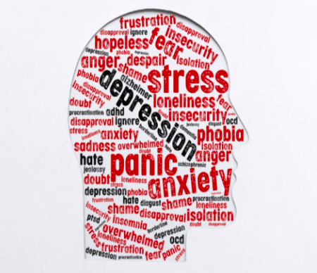

Many people experience mental health challenges at some point in their lives. Young adults may face pressures related to education, work, and personal relationships, which can sometimes affect their mental wellbeing.
Understanding common mental health issues can help people recognise when they or someone they know may need support.

Stress is a natural response to challenging situations such as exams, deadlines, or personal problems. While some stress can be helpful and motivating, too much stress over a long period can negatively affect mental and physical health.
Anxiety involves feelings of worry, nervousness, or fear. It is normal to feel anxious in certain situations, but persistent anxiety can interfere with daily activities such as studying, working, or socialising.
Low mood and depression involve feelings of sadness, lack of motivation, and loss of interest in activities that people usually enjoy. Depression can affect sleep, energy levels, concentration, and overall wellbeing.
If someone experiences these difficulties for a long time, it is important to seek support from trusted individuals or professional services.
Mental health issues can vary in severity, and some people may only experience mild symptoms while others may require more support. Recognising early signs of difficulties can help individuals take action before problems become more serious.
Environmental factors such as work conditions, family situations, or life changes can also contribute to mental health difficulties. When several stressors occur at the same time, they may increase emotional pressure and affect overall wellbeing.
Understanding common mental health challenges can help individuals recognise when they may need support. Awareness can also encourage people to be more understanding and supportive toward others who may be experiencing similar struggles.